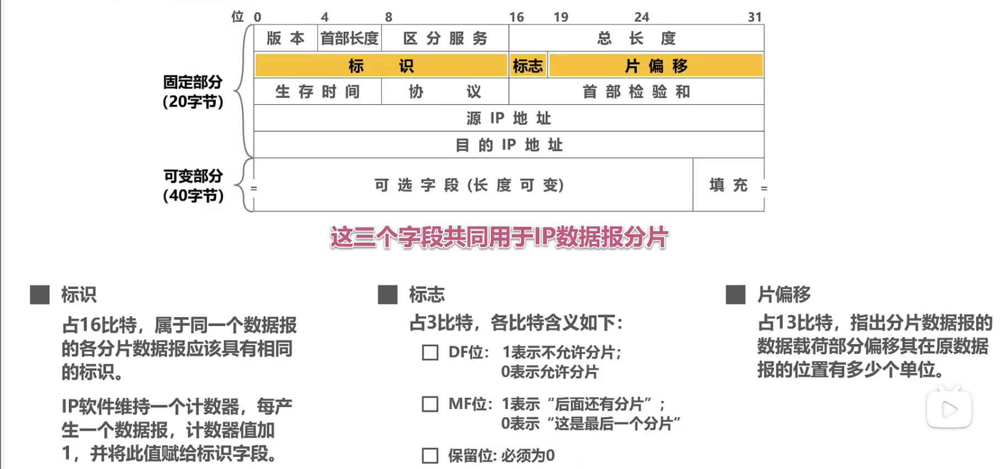

计算机网络杂记-09
IPv4 数据报的首部格式

版本：4 位，指明 IP 协议的版本，IPv4 的版本号为 4
首部长度：4 位，指明首部的长度，单位为 4 字节，最大值为 15，即最大长度为 60 字节
区分服务：8 位，用于指明数据报的优先级，最高 3 位为优先级，最低 3 位为服务类型，中间 2 位保留
总长度：16 位，指明整个数据报的长度，单位为字节，最大值为 65535 字节
可选项：可选项的长度为 0 或 4 的倍数，最大长度为 40 字节，可选项的长度由首部长度字段指明
填充：填充字段的长度为 0 或 4 的倍数，最大长度为 40 字节，填充字段的长度由首部长度字段指明
标识：16 位，用于唯一标识主机发送的每一个数据报，当数据报被分片时，每个分片的标识字段相同
标志：3 位，用于指明数据报是否被分片，最高位为保留位，中间位为 DF，最低位为 MF(DF: Don’t Fragment, MF: More Fragment)
片偏移：13 位，用于指明分片的偏移量，单位为 8 字节，最大值为 8191，即最大偏移量为 65528 字节
这三个字段共同指明了分片的偏移量，当数据报被分片时，每个分片的标识字段相同，标志字段的 MF 位为 1，最后一个分片的 MF 位为 0，每个分片的片偏移字段指明了分片的偏移量，单位为 8 字节，最大值为 8191，即最大偏移量为 65528 字节
生存时间：8 位，用于指明数据报在网络中的存活时间，单位为秒，最大值为 255，即最大存活时间为 255 秒(TTL: Time To Live)
协议：8 位，用于指明数据报的上层协议，如 TCP、UDP、ICMP、IGMP 等
首部校验和：16 位，用于校验首部的正确性，不校验数据部分，校验和的计算方法为：将首部中的所有 16 位字相加，然后取反得到校验和，如果计算结果中有进位，则将进位加到最低位中
源地址：32 位，指明发送数据报的主机的 IP 地址
目的地址：32 位，指明接收数据报的主机的 IP 地址
网际控制报文协议 ICMP
ICMP (Internet Control Message Protocol) 是一个网络层协议，它用于在主机和路由器之间传递控制消息，它是 IP 协议的一个子协议，ICMP 报文被封装在 IP 数据报中，ICMP 报文的首部长度为 8 字节
IMCP 差错报文种类
目的不可达差错报文目的不可达差错报文用于指明主机或路由器无法将数据报交付给目的主机，目的不可达差错报文的类型字段为 3
源抑制差错报文源抑制差错报文用于指明主机或路由器因为拥塞而丢弃数据报，源抑制差错报文的类型字段为 4
时间超过差错报文时间超过差错报文用于指明数据报在网络中的存活时间超过了生存时间，时间超过差错报文的类型字段为 11
参数问题差错报文参数问题差错报文用于指明主机或路由器收到的数据报中有一些字段的值不正确，参数问题差错报文的类型字段为 12
改变路由差错报文改变路由差错报文用于指明主机或路由器收到的数据报的路由发生了改变，改变路由差错报文的类型字段为 5
重定向差错报文(在某些资料中，重定向差错报文不属于 ICMP 差错报文)
重定向差错报文用于指明主机或路由器收到的数据报的路由发生了改变，重定向差错报文的类型字段为 5
不发送差错报文的情况
如果数据报的首部校验和不正确，则丢弃数据报，不发送差错报文
如果数据报的生存时间为 0，则丢弃数据报，不发送差错报文
如果数据报的首部长度字段的值小于 5，则丢弃数据报，不发送差错报文
如果数据报的目的地址是广播地址或多播地址，则丢弃数据报，不发送差错报文
如果数据报的目的地址是本机地址，则丢弃数据报，不发送差错报文
如果数据报的目的地址是回环地址，则丢弃数据报，不发送差错报文
如果数据报的目的地址是
- 127.0.0.0
- 0.0.0.0
常用的 ICMP 询问报文
回送请求报文回送请求报文用于询问目的主机是否可达，回送请求报文的类型字段为 8
回送应答报文回送应答报文用于回答回送请求报文，回送应答报文的类型字段为 0
时间戳请求报文时间戳请求报文用于询问目的主机的时间，时间戳请求报文的类型字段为 13
时间戳应答报文时间戳应答报文用于回答时间戳请求报文，时间戳应答报文的类型字段为 14
网络掩码请求报文网络掩码请求报文用于询问目的主机的子网掩码，网络掩码请求报文的类型字段为 17
网络掩码应答报文网络掩码应答报文用于回答网络掩码请求报文，网络掩码应答报文的类型字段为 18
其中，第 1、2 种报文是必须的，第 3、4 种报文是可选的，第 5、6 种报文是必须的
典型应用
ping
ping 是一个常用的网络工具，它用于测试目的主机是否可达，它的原理是向目的主机发送回送请求报文，如果目的主机可达，则目的主机会回答回送应答报文，如果目的主机不可达，则目的主机不会回答回送应答报文简言之：- ping 用来测试目的主机是否可达
- 应用层向网络层发送回送请求报文
- 网络层向应用层发送回送应答报文
traceroute
traceroute 是一个常用的网络工具，它用于测试数据报从源主机到目的主机经过的路由，它的原理是向目的主机发送回送请求报文，如果目的主机可达，则目的主机会回答回送应答报文，如果目的主机不可达，则目的主机不会回答回送应答报文，traceroute 会向目的主机发送多个回送请求报文，每个回送请求报文的生存时间不同，当数据报的生存时间为 1 时，数据报只能到达第一个路由器，当数据报的生存时间为 2 时，数据报只能到达第二个路由器，以此类推，当数据报的生存时间为 n 时，数据报只能到达第 n 个路由器，当数据报的生存时间为 n+1 时，数据报到达目的主机，traceroute 通过这种方式来确定数据报经过的路由简言之：- traceroute 用来测试数据报从源主机到目的主机经过的路由
- 应用层向网络层发送回送请求报文
- 网络层向应用层发送回送应答报文
- 每个回送请求报文的生存时间不同
- 通过生存时间来确定数据报经过的路由
在 Windows 系统中，ping 和 traceroute (tracert) 都是使用 ICMP 协议，但是在 Linux 系统中，ping 使用 ICMP 协议，traceroute 使用 UDP 协议
虚拟专用网 VPN (Virtual Private Network) 以及 网络地址转换 NAT (Network Address Translation)
虚拟专用网 VPN
虚拟专用网 VPN 是一种通过公用网络来搭建专用网络的技术，它的原理是通过加密技术将数据报加密，然后将加密后的数据报封装在 IP 数据报中，再将 IP 数据报封装在 IP 数据报中，最后将 IP 数据报发送到目的主机，目的主机收到 IP 数据报后，将 IP 数据报解封装，然后将解封装后的 IP 数据报发送到目的主机，目的主机收到 IP 数据报后，将 IP 数据报解封装，然后将解封装后的数据报发送到目的主机，这样，源主机和目的主机之间就建立了一条专用的加密通道，这条专用的加密通道就是虚拟专用网 VPN。
虚拟专用网中的各主机所分配到的地址应该是本机构可自由分配的专用地址，而无需申请
在因特网数字分配机构 IANA (Internet Assigned Numbers Authority) 中，有三个地址段是专门用于虚拟专用网的，它们是：
10.0.0.0/8
172.16.0.0/12
192.168.0.0/16
参考：IANA IPv4 Address Space Registry
外联网 VPN 的访问需要使用 IP 隧道技术，这里不做介绍。
网络地址转换 NAT
网络地址转换 NAT 是一种通过公用网络来搭建专用网络的技术，它的原理是通过路由器将内部网络的 IP 地址转换为外部网络的 IP 地址，然后再将外部网络的 IP 地址转换为内部网络的 IP 地址，这样，内部网络的主机就可以通过路由器访问外部网络，外部网络的主机也可以通过路由器访问内部网络，这样，内部网络和外部网络之间就建立了一条专用的通道，这条专用的通道就是网络地址转换 NAT。
NAT 的发明是为了解决 IPv4 地址不足的问题，NAT 有三种类型，它们分别是：
静态 NAT
动态 NAT
PAT (Port Address Translation)